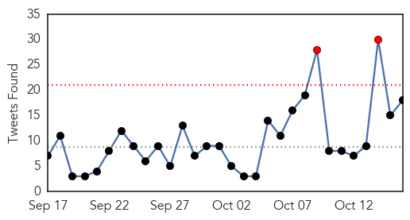
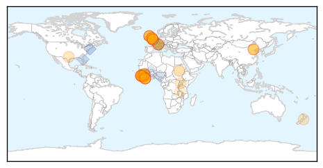
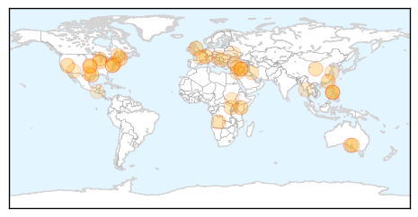
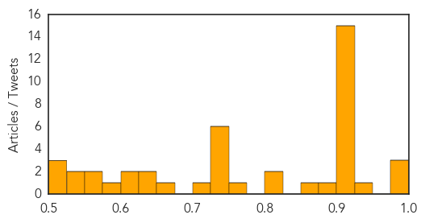

Ebola
30-Day Web Trend
3 alerts, 0 warnings

30-Day Twitter Trend
4 alerts, 0 warnings

Article Locations
Article Confidences

Top Articles:
- 1.000
- How Pauline Cafferkey's Ebola relapse tears up everything doctors thought they knew
- 1.000
- Genomic analysis confirms sexual transmission of Ebola virus in Liberia
- 1.000
- Ebola Outbreak: 3 Things We Needed to Learn
- 1.000
- Research: Ebola Persists In Semen For Up To Nine Months
- 1.000
- UK Ebola Patient Relapses Nine Months Later; Proves How Little We Understand Virus
- 0.999
- Two new Ebola cases in Guinea show virus still spreading
- 0.999
- Ebola Virus Can Survive for 9 Months in Male Survivors
- 0.999
- Two new Ebola cases in Guinea confound hopes of end to outbreak
- 0.999
- 2 New Cases Of Deadly Virus In Guinea, World Health Organization Says
- 0.999
- Ebola May Stay in Survivors' Semen for Many Months
- 0.999
- Sexual transmission of Ebola possible after more than 179 days of disease onset
- 0.998
- Ebola outbreak may enter third year after new cases in Guinea
- 0.998
- Two new cases of Ebola in west Africa
- 0.998
- UK Ebola 'relapse' case takes virus specialists to uncharted waters
- 0.998
- Rwanda Airport Resumes Automated Clearance After Ebola Scare
- 0.997
- Ebola Virus Can Survive In Semen For Months, But Cases Are Rare
- 0.997
- The lingering symptoms of Ebola survivors
- 0.997
- Two New Cases Of Ebola Reported In Guinea
- 0.997
- Two new Ebola cases found in Guinea, dashing hopes
- 0.997
- Ebola lingers in semen for nine months
- 0.994
- UK Ebola "relapse" case takes virus specialists to uncharted waters, Others news, Health News, AsiaOne YourHealth
- 0.994
- What Happens When You Survive Ebola
- 0.992
- mBiosphere: Many viruses, one treatment: toward making a pan-filovirus antibody therapy
- 0.987
- Ebola in Semen Lives On
- 0.987
- Afropages : ebola-outbreak-update-2-new-cases-of-deadly-virus-in-guinea-world-health-organization-says
- 0.979
- British Ebola nurse now ‘critically ill’
- 0.979
- Chinese Ebola vaccine "safe and responsive" so far: Sierra Leonean official
- 0.979
- Chinese Ebola vaccine "safe and responsive" so far: Sierra Leonean official - Xinhua
- 0.974
- UPDATE 1-Two new Ebola cases in Guinea, WHO states
- 0.914
- British nurse Cafferkey hospitalized with Ebola virus relapse.
- 0.822
- New Ebola fight for Blantyre health centre nurse Pauline Cafferkey
- 0.757
- Health care worker gown, glove procedures key to contamination risks
- 0.669
- ‘Africa should invest in own innovations’
- 0.666
- GIZ Demonstrates Commitment to Boosts Salone Government Recovery Plan
- 0.531
- The most from the coast
Top Tweets:
- 0.999
- Ebola virus outbreak - Page 196 - http://t.co/TBTKKDtLMJ ebola
- 0.999
- Ebola virus outbreak - Page 195 - http://t.co/JXOoJeLXUD ebola
- 0.998
- Ebola Outbreak Update: 2 New Cases Of Deadly Virus In Guinea, World Health Organization Says - http://t.co/StXsk8m1Zb ebola
- 0.995
- Rapid Risk Assessment: Outbreak of Ebola virus disease in West Africa, 13th update - http://t.co/YrOV66lXbJ ebola
- 0.993
- Rapid risk assessment: Outbreak of Ebola virus disease in West Africa, 13th update, 13 October 2015 - http://t.co/EEkX33cD5P ebola
- 0.992
- Sexual transmission of Ebola virus in Liberia confirmed - http://t.co/XUgkNnsAzx ebola
- 0.991
- UN: 2 New Ebola Cases in Guinea Show Virus Still Spreading - http://t.co/fllOpxeUxx ebola
- 0.991
- Emergency Appeal Operation Update - Ebola Virus Disease Emergency Appeals (Guinea, Liberia ... - http://t.co/0X0ga1Z7Fg ebola
- 0.988
- Scottish nurse has a relapse of Ebola - https://t.co/8XrMCAtgEJ ebola
- 0.987
- Ebola virus disease epidemiological update: 16 October 2015 - http://t.co/cayVfgxEEJ ebola
- 0.986
- “This isn’t a recurrence of Ebola...it's a meningitis-like syndrome...a result of the lingering of Ebola virus" http://t.co/xEwMUbCJVy
- 0.985
- Abandi bantu babiri babasanzemo Ebola muri Guinea - http://t.co/JWWtAfcHrS ebola
- 0.984
- Two new Ebola cases in Guinea show virus still spreading - http://t.co/QyJNCI1bvH ebola
- 0.983
- UK Ebola "relapse" case takes virus specialists to uncharted waters - http://t.co/2KmNj1RltR ebola
- 0.981
- Ebola lingers in body - http://t.co/4nTTFpJYB1 ebola
- 0.979
- Two new cases of Ebola in west Africa - http://t.co/nxdhZ0tcnb ebola
- 0.978
- Ebola study finds women in Guinea who appear immune to the virus - http://t.co/GhVKQatIro ebola
- 0.975
- Report launched into suspected links between outbreaks of Ebola Virus Disease and forest ... - http://t.co/100wxfhK3j ebola
- 0.974
- U.K. Nurse Suffers Rare Case Of Ebola Relapse - http://t.co/8lWzcq3t26 ebola
- 0.973
- UPDATE 3-Ebola outbreak may enter third year after new cases in Guinea - http://t.co/q1de5UbB4m ebola
- 0.972
- Ebola survivors can develop disease again - WHO - http://t.co/UJ5spegn1W ebola
- 0.971
- Ebola crisis: Two new cases confirmed in Guinea, WHO says - http://t.co/M2ZY92mTO0 ebola
- 0.965
- Ebola virus persists in body fluids of survivors for months – UN health agency - http://t.co/CsuLTp7MdO ebola
- 0.963
- WHO list of medical devices for Ebola care - http://t.co/7BsSx1FtNa ebola
- 0.963
- Many people declared Ebola-free still may carry the virus - http://t.co/bm0Jf2gYj3 ebola
- 0.963
- First sexual transmission of Ebola virus case comes to light - http://t.co/fwEmZOyQGW ebola
- 0.963
- Ebola Coordinator - http://t.co/SSt1ekuxO3 ebola
- 0.962
- Ebola, un virus encore plus redoutable qu'imaginé http://t.co/NS59jcA1tc
- 0.962
- Ebola is now an STD - http://t.co/OjJTaDcPQN ebola
- 0.961
- Ebola virus may have lain dormant in Pauline Cafferkey's body - http://t.co/TT1NPQiff6 ebola
- 0.958
- U.K. Nurse Who Appeared to Beat Ebola Relapses, Is Again Critically Ill With the Virus - http://t.co/bGFytnDuoE ebola
- 0.957
- The Aftermath Of Ebola: Confirmed Sexual Transmission Of Viral Disease ... - Medical Daily http://t.co/4dNL1XEylz ebola EVD
- 0.956
- Two Ebola cases found in Guinea, dashing hopes of outbreak's end - http://t.co/aFpRKMu19e ebola
- 0.954
- UK Ebola Patient Relapses Nine Months Later; Proves How Little We Understand Virus - http://t.co/ODuVsxBfQP ebola
- 0.949
- Ebola in West Africa - CDC’s Role in Epidemic Detection, Control, and Prevention http://t.co/NCSapI1Vho
- 0.948
- Second Ebola nurse now crashing into critical condition after CDC-controlled media falsely ... - http://t.co/qsovLKESFs ebola
- 0.945
- What first case of sexually transmitted Ebola means for public health - http://t.co/gwv8oq5c3b ebola
- 0.942
- 'Cured' UK Ebola Nurse Critical Again - http://t.co/zgfqI8mh08 ebola
- 0.941
- Two new Ebola cases in Guinea, WHO says - Reuters UK http://t.co/8xZlslZmfd ebola EVD
- 0.940
- Ebola Outbreak: 3 Things We Needed to Learn - http://t.co/NDVzJc5zJX ebola
- 0.939
- Two new Ebola cases in Guinea, WHO says - http://t.co/rcEiF0DWmK ebola
- 0.939
- Two new Ebola cases in Guinea, WHO says - http://t.co/nmZRMksu09 ebola
- 0.937
- The Ebola virus may persist in some mens semen for nine months after... Stock Footage Video - http://t.co/l92UOcrHAV ebola
- 0.933
- Ebola Symptoms In UK Nurse Pauline Cafferkey 10 Months After Recovery: Are Ebola Survivors ... - http://t.co/ASaTOklQDV ebola
- 0.930
- Two new Ebola cases found in Guinea, dashing hopes - Yahoo News http://t.co/NV9dnnJ4WA ebola EVD
- 0.930
- Two new Ebola cases found in Guinea, dashing hopes - Yahoo News http://t.co/MmsXuTmRU8 ebola EVD
- 0.930
- Two new Ebola cases found in Guinea, dashing hopes - Yahoo News http://t.co/BnD9bNVVuZ ebola EVD
- 0.930
- Ailing Ebola nurse in UK may be rare case of relapse - http://t.co/th99kKuQGn ebola
- 0.929
- Two new Ebola cases in Guinea confound hopes of end to outbreak - http://t.co/lsVWO1KaGz ebola
- 0.929
- Ebola Re-Emerges in Guinea with 2 New Cases - http://t.co/EwC4Ircbdf ebola
Showing top 50 tweets...
Unknown
30-Day Web Trend
0 alerts, 0 warnings

30-Day Twitter Trend
2 alerts, 0 warnings

Article Locations
Article Confidences
Top Articles:
- 0.992
- Camels in Kenya test positive for MERS virus: study
- 0.979
- No Needle nasal spray flu vaccine available for kids in Ontario
- 0.976
- Philippines asks over 400 airline passengers to check for MERS
- 0.933
- Delaware reports first flu case of new season
- 0.922
- African Health Officials Hail Artemisinin For Combating Malaria - World
- 0.917
- Chicago Tribune
- 0.917
- Chicago Tribune
- 0.917
- Chicago Tribune
- 0.917
- Chicago Tribune
- 0.917
- Chicago Tribune
- 0.917
- Chicago Tribune
- 0.917
- Chicago Tribune
- 0.917
- Chicago Tribune
- 0.917
- Chicago Tribune
- 0.917
- Chicago Tribune
- 0.917
- Chicago Tribune
- 0.912
- Almost 70 people infected with scabies during outbreak at Burlington hospital
- 0.912
- Salmonella Outbreak Hits Eight Provinces Including B.C.
- 0.911
- Pet Talk: Feline Leukemia
- 0.898
- N&N hospital patients are tested for an antibiotic resistant superbug
- 0.855
- Q fever: Goat dairy farmer developing Australian vaccine as 'endemic' disease rips through herd
- 0.817
- Finding support for Q Fever
- 0.816
- Health Experts Say Fall Is Best Time to Get Flu Shots
- 0.771
- Govt’s Shs 4.7bn plot to improve medical care
- 0.727
- Syrian army launches Aleppo offensive with Iranian support
- 0.727
- Strauss-Kahn target of lawsuit over failed business venture
- 0.727
- Arson attack on holy Jewish site starts new wave of unrest
- 0.727
- Hungary to seal border with Croatia over migrant crisis
- 0.727
- EU, Turkey refugee plan only a draft, says Ankara
- 0.727
- EU, Turkey agree on migrant ‘action plan’ as Afghan shot dead
- 0.719
- Canada investigates Salmonella outbreak
- 0.661
- 11 key strategies to reduce orthopedic surgery complications — And resulting claims
- 0.648
- Update on global polio eradication and the polio vaccine
- 0.637
- More than 50 cases confirmed of vesicular stomatitis virus
- 0.625
- Protecting against rabies
- 0.607
- WHO officials hope to eradicate polio by 2024
- 0.595
- Oregon State receives grants to investigate infectious disease outbreak
- 0.559
- Vaccine for Johne's 'years away'
- 0.554
- A new virus on Romanian territory. The European Commission and the EU Member States have been notified
- 0.539
- Auburn child infected with deadly E. coli strain goes home
- 0.537
- Auburn boy infected with E. coli returns home — Health — Bangor Daily News — BDN Maine
- 0.517
- Arizona's initiative played part in latest Nobel Prize in medicine
- 0.513
- Hospital treatments severely threatened by antibiotic resistance
- 0.505
- Here Are Your Chances of Getting an Antibiotic-Resistant Infection After Surgery
Top Tweets:
- 0.658
- FluFactFriday: When more people get vaccinated against the flu, less flu can spread through that community. http://t.co/NRqMeJV7b7
- 0.620
- RT: FluFactFriday: When more people get vaccinated against the flu, less flu can spread through that community. http://t.co/NRqMe…